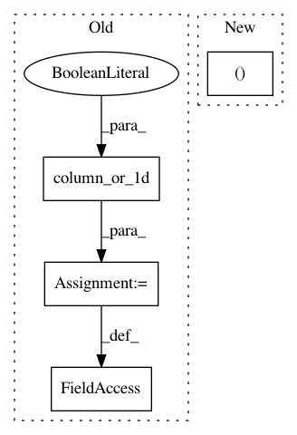

41e9b243d893eca09615bf00f211950e2a69455b,tslearn/shapelets.py,ShapeletModel,fit,#ShapeletModel#Any#Any#,331
Before Change
X = check_array(X, allow_nd=True)
X = to_time_series_dataset(X)
X = check_dims(X, X_fit=None)
y = column_or_1d(y, warn=True)
set_random_seed(seed=self.random_state)
numpy.random.seed(seed=self.random_state)
n_ts, sz, d = X.shape
self.X_fit_ = X
self.model_ = None
self.transformer_model_ = None
self.locator_model_ = None
self.categorical_y_ = False
self.label_binarizer_ = None
self.d_ = d
if y.ndim == 1 or y.shape[1] == 1:
self.label_binarizer_ = LabelBinarizer().fit(y)
y_ = self.label_binarizer_.transform(y)
self.classes_ = self.label_binarizer_.classes_
else:
After Change
y : array-like of shape=(n_ts, )
Time series labels.
X, y = check_X_y(X, allow_nd=True)
X = to_time_series_dataset(X)
X = check_dims(X, X_fit=None)
In pattern: SUPERPATTERN
Frequency: 3
Non-data size: 4
Instances
Project Name: rtavenar/tslearn
Commit Name: 41e9b243d893eca09615bf00f211950e2a69455b
Time: 2019-07-26
Author: givdwiel.vandewiele@ugent.be
File Name: tslearn/shapelets.py
Class Name: ShapeletModel
Method Name: fit
Project Name: rtavenar/tslearn
Commit Name: 41e9b243d893eca09615bf00f211950e2a69455b
Time: 2019-07-26
Author: givdwiel.vandewiele@ugent.be
File Name: tslearn/svm.py
Class Name: TimeSeriesSVR
Method Name: fit
Project Name: rtavenar/tslearn
Commit Name: 41e9b243d893eca09615bf00f211950e2a69455b
Time: 2019-07-26
Author: givdwiel.vandewiele@ugent.be
File Name: tslearn/svm.py
Class Name: TimeSeriesSVC
Method Name: fit